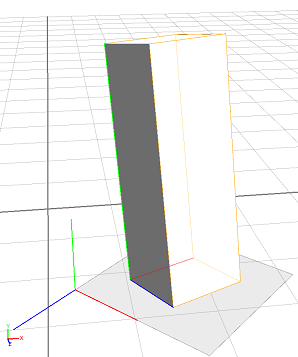

convert function
Syntax
float convert(coordinate, fromSystem, toSystem, type, x, y, z)
float[] convert(fromSystem, toSystem, type, coordinates)
Parameters
- coordinate (selector)
x, y, z Coordinate component to convert. - fromSystem (selector)
scope, pivot, object, world Coordinate system from which to convert. - toSystem (selector)
scope, pivot, object, world Coordinate system to which to convert. - type (selector)
pos, orient Choose interpretation of the coordinates array or the (x, y, z) tuple as coordinates or angles. - x, y, z (float)
coordinates (float[])
Position (coordinates) or orientation (angles in degrees) in the fromSystem to convert to the toSystem.
Returns
The selected coordinate component of the tuple (x, y, z) or the coordinates array, converted from the fromSystem coordinate system to the toSystem coordinate system. The coordinates can either describe angles or a position.
Description
The convert function converts positions and orientations between different coordinate systems.
Related
Example
|  |
Init -->
extrude(3)
t('0.2, 0, '0.7)
s('0.5, '1, '0.5)
r(-10, 70, 0)
// position of scope origin in world coordinates
print(convert(scope, world, pos, [0,0,0]))
// (3)[1.0452611297369,0,2.183733612298965]
// x-position of scope origin in world coordinates
print(convert(x, scope, world, pos, 0, 0, 0))
// 1.0452611297369
// position of scope origin in pivot coordinates
print(convert(scope, pivot, pos, [0,0,0]))
// (3)[0.3999996185302735,0,-0.6000001430511476]
// orientation of scope origin relative to world axes
print(convert(scope, world, orient, [0,0,0]))
//(3)[-10,23.45978546142578,0]
|
Copyright ©2008-2021 Esri R&D Center Zurich. All rights reserved.